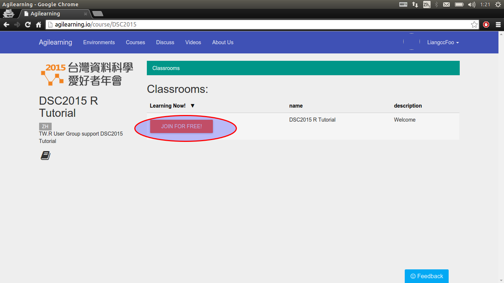
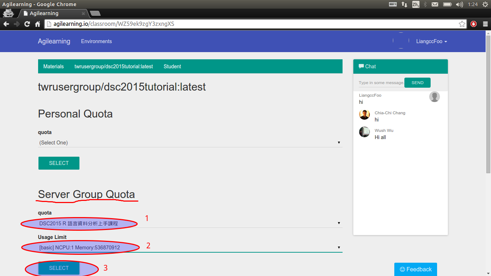

平台網址：agilearning.io
平台使用教學
- 在信箱中取得平台邀請連結，開啟瀏覽器進入連結。

- 可選擇使用Facebook或Meetup登入。登入後點選Agilearning進入首頁。

- 進入首頁後，點選台灣資料科學愛好者年會圖案。

- 點選join classroom，再點 Go to classroom。
- 點選twrusergroupdsc2015tutorial:latest。

- 在Server Group Quota選擇 「DSC 2015 R 語言資料分析上手課程」與[basic ...]，點選Select。
- 稍候片刻，應有灰色畫面跳出，選擇Reconnect。

- 輸入使用者名稱密碼，按Sign in。
- 恭喜您，成為一位快樂的R語言使用者！可以鍵入你的第一個指令：
library(DSC2015R)